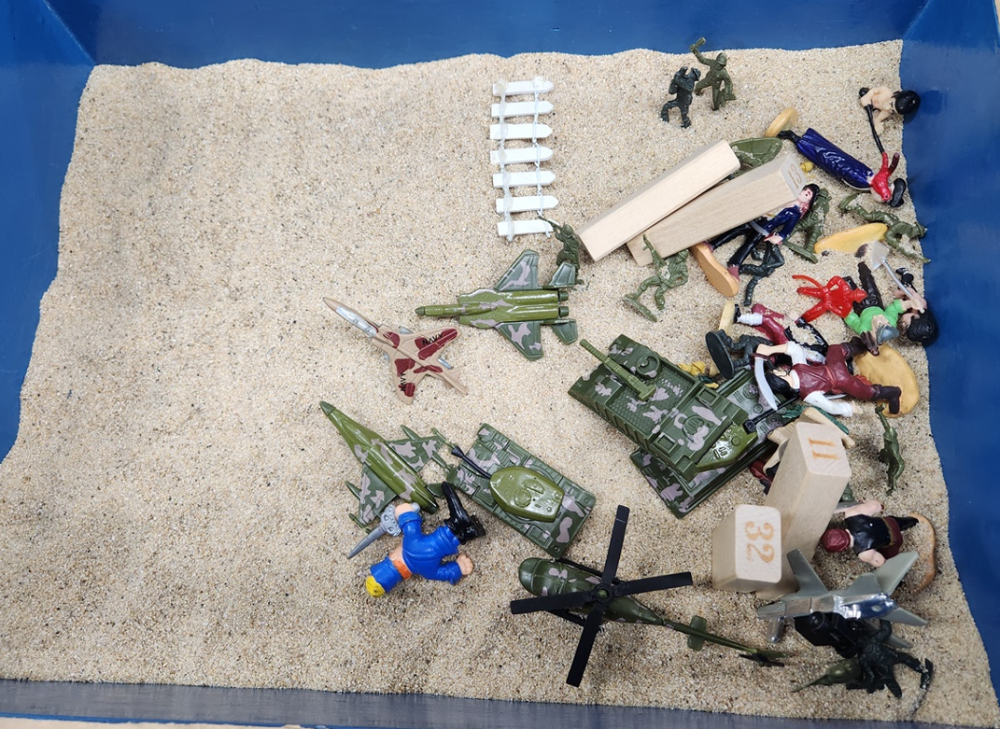

철민이(가명)는 중2학년 아들셋 중에서 둘째, 맞벌이 가정, 성격차이로 부부싸움이 잦음. 부모는 큰 아들에겐 너무 엄격하여 우울증 치료약을 먹고 있음, 막내에겐 너무 허용적이어서 형을 자주 건드리고 다툼, 이에 방임양육으로 일관성 없어서 막내를 무조건 보호하고 있음. 철민이는 중학교에서 수업시간에 말장난으로 수업에 산만함, 연필로 친구 옷에 낙서하기, 친구를 거칠게 대하고 약한 사람에게 함부로 대하고 조롱하기, 교사에게 대들고 욕하기 등 반항적인 행동 등 다양한 문제가 많아서 부모는 늘 걱정을 많이 함.

정서사회적 특징을 다음과 같이 정리할 수 있다.
1. 정서적 특징
1) 불안과 혼란
잦은 부부싸움으로 인해 가정 내 불안정한 분위기를 경험하며, 심리적 불안을 느낄 가능성이 높다.
부모 간의 갈등은 아이에게 안정감과 안전감을 주지 못해 정서적으로 불안정하게 만들 수 있다.
2) 분노와 공격성
감정 조절에 어려움을 겪고 있으며, 이를 공격적 행동으로 표현하고 있다.
친구에게 거칠게 대하거나 약한 또래를 조롱하고 교사에게 반항하는 행동은 내면의 분노와 좌절감을 외부로 표출하는 방식으로 볼 수 있다.
3) 자존감 저하
친구 관계에서의 부적응 및 학교 생활에서의 문제 행동은 자존감이 낮아졌음을 시사할 수 있다.
자신감을 얻기 위해 타인을 통제하거나 괴롭히는 방식으로 행동할 수 있다.
4) 감정 표현의 왜곡
자신의 감정을 건강하게 표현하지 못하고, 부정적인 방식(예: 욕설, 낙서, 조롱)을 통해 표출하고 있다.
이는 적절한 감정 표현 방법을 배우지 못했거나 가정 내에서 감정 표현이 억압되었을 가능성을 시사한다.
2. 사회적 특징
1) 부적절한 또래 관계
친구를 사귀고 싶지만, 이를 표현하는 방식이 서툴고 부적절하다.
말장난이나 친구 옷에 낙서하기, 거칠게 대하는 행동은 타인과의 관계 형성에서 어려움을 겪고 있음을 보여준다.
2) 권력과 통제 욕구
약한 또래를 괴롭히고 조롱하는 행동은 자신의 사회적 위치를 확인하려는 시도로 볼 수 있다.
이는 가정 내에서 자신의 위치나 역할에 대한 혼란이나 무시당한 경험이 있을 때 나타날 수 있다.
3) 성인 권위에 대한 도전
교사에게 대들고 욕하는 행동은 권위에 대한 도전으로, 이는 가정 내 부모의 권위가 불안정하거나 부모의 갈등 속에서 권위가 상실된 경우 나타날 수 있다.
특히, 성인 권위자에게 불신을 가지고 있으며, 이를 통해 자신의 독립성을 과시하고 싶어 할 수 있다.
4) 사회적 규범 이해의 부족
학교나 또래 집단에서 요구되는 사회적 규범을 잘 이해하지 못하거나 이를 거부하고 있다.
이는 가정 내에서 일관된 규칙이나 훈육이 부족했을 가능성을 나타낸다.
3. 또래 관계
1) 친구 사귀기 어려움
친구를 사귀고자 하는 욕구는 있으나, 이를 표현하는 방식이 부적절하다.
말장난을 하거나, 친구의 옷에 낙서를 하며 관심을 끌려 하지만, 이는 오히려 또래의 거부 반응을 유발할 가능성이 높다.
2) 공격적 상호작용
친구들에게 거칠게 대하고, 약한 또래를 함부로 대하거나 조롱하는 행동을 보인다.
이는 또래 집단에서의 갈등을 초래하고, 결국 고립되거나 부정적인 또래 관계를 형성하게 만든다.
3) 힘의 불균형
약한 또래를 대상으로 함부로 대하는 행동은, 또래 관계에서 힘의 우위를 통해 자기 가치를 확인하고자 하는 것으로 해 석될 수 있다.
이는 건강한 상호작용을 저해하며, 지속적으로 부정적인 관계를 유지하게 만들 수 있다.
4. 문제점 해결 방법
1) 정서적 지원 및 안정감 제공
첫째, 가정 내 환경 개선 : 부모 상담:부부싸움이 잦은 가정 환경이 철민이의 불안정한 정서에 큰 영향을 미칠 수 있으므로, 부모 상담을 통해 갈등을 줄이도록 돕는다. 부모가 건강하게 의사소통하고 갈등을 조정할 수 있는 방법을 배우는 것이 필요하다.
둘째, 가족 치료 : 가족 전체가 참여하는 가족 치료를 통해 가정 내 관계를 회복하고 안정된 가정 분위기를 조성할 수 있다.
긍정적인 양육 태도:부모가 철민이에게 일관되고 따뜻한 관심을 보여줌으로써 정서적 안정감을 제공하도록 지도한다.
2) 감정 및 행동 조절 능력 강화
첫째, 감정 조절 프로그램 : 감정 인식 및 표현 훈련:철민이가 자신의 감정을 인식하고 적절히 표현할 수 있도록 돕는다.
예: 감정 카드나 그림일기 등을 활용.
둘째, 감정 조절 기법 교육 : 화가 났을 때 심호흡, 타임아웃(time-out) 방법을 통해 감정을 조절할 수 있도록 훈련한다.
셋째, 사회적 기술 훈련 : 친구와의 상황에서 적절한 대화법과 행동을 연습할 수 있도록 역할 놀이를 활용한다.
넷째, 또래 관계 개선 프로그램 : 친구와 긍정적으로 소통하고 협력할 수 있는 활동을 제공한다.
예: 팀 프로젝트, 협동놀이 등.
다섯째, 긍정적 행동 강화 : 칭찬과 보상 시스템:철민이가 긍정적인 행동을 보일 때마다 즉각적으로 칭찬하고 작은 보상을 제공하여 좋은 행동을 강화한다.
여섯째, 부정적 행동 대처법 : 반항적인 행동을 했을 때 일관된 규칙과 적절한 훈육 방법을 사용하여 통제한다.
철민이의 문제 행동은 가정 내 불안정한 환경, 감정 조절의 어려움, 부적절한 사회적 기술 등 다양한 요인에 기인할 수 있다. 이러한 문제를 해결하기 위해 가정, 학교, 전문가가 함께 협력하여 정서적 안정감 제공, 감정 및 행동 조절 훈련, 긍정적 또래 관계 형성 지원, 전문가의 치료적 접근을 균형 있게 제공해야 한다. 이를 통해 철민이가 건강한 사회적 관계를 형성하고, 학교 생활에서 긍정적인 변화를 경험할 수 있도록 돕는 것을 목표로 구성한다.
2024.08.12 - [상담] - 가정폭력은 불안과 고통, 외상 후 스트레스 장애 (PTSD) 유발
가정폭력은 불안과 고통, 외상 후 스트레스 장애 (PTSD) 유발
1. 가정폭력 피해자들의 특성 가정폭력 피해자들은 매우 다양하고 복잡한 내재된 감정과 심리적 특성을 보일 수 있습니다. 이러한 특성들은 그들의 경험과 반응하는 방식에 깊이 영향을 미치며
think-sis.co.kr
2022.02.20 - [분류 전체보기] - 긍정적 정서와 부정적 정서의 종류 -사랑과 행복, 슬픔과 분노 및 공포
긍정적 정서와 부정적 정서의 종류 -사랑과 행복, 슬픔과 분노 및 공포
정서표현은 가장 기본적인 일차 정서(primary emotions)와 일차적 반응 이후에 나타나는 이차 정서(secondary emotion)로 구분한다. 1. 일차 정서 일차 정서(primary emotions)는 기본 정서이다. 세계 문화권의
think-sis.co.kr